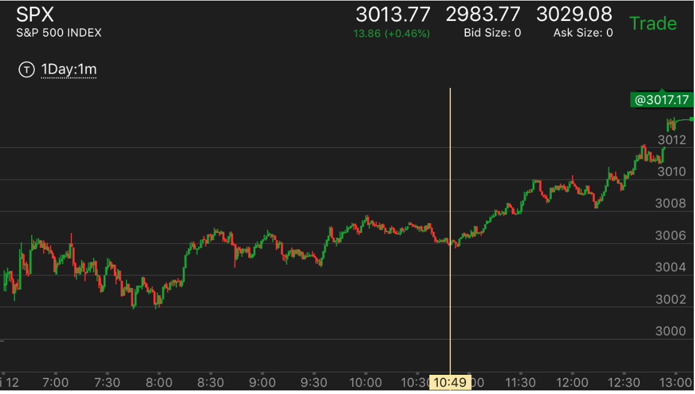
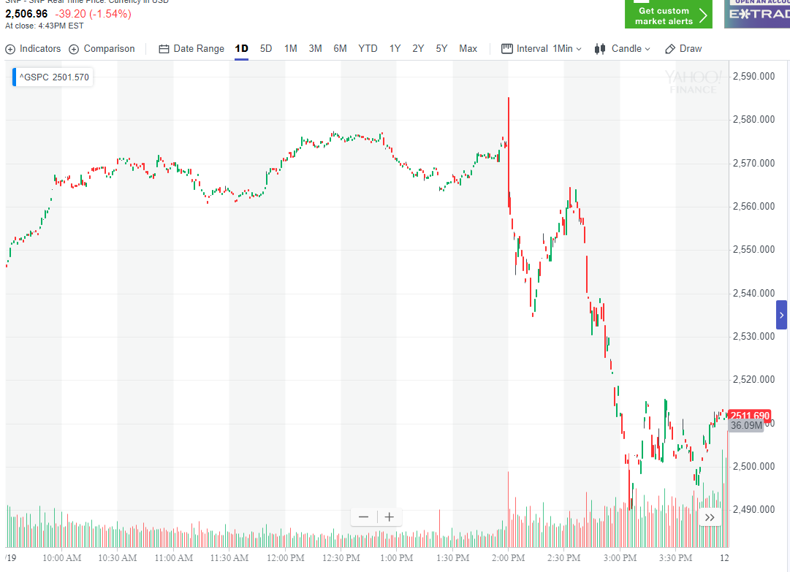
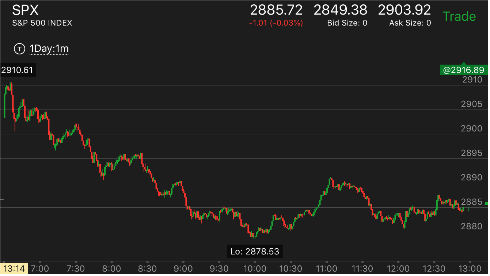
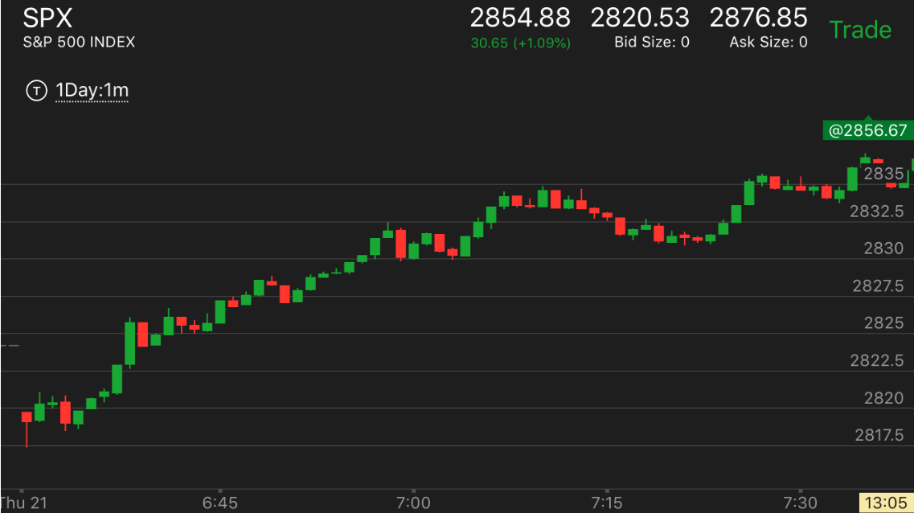
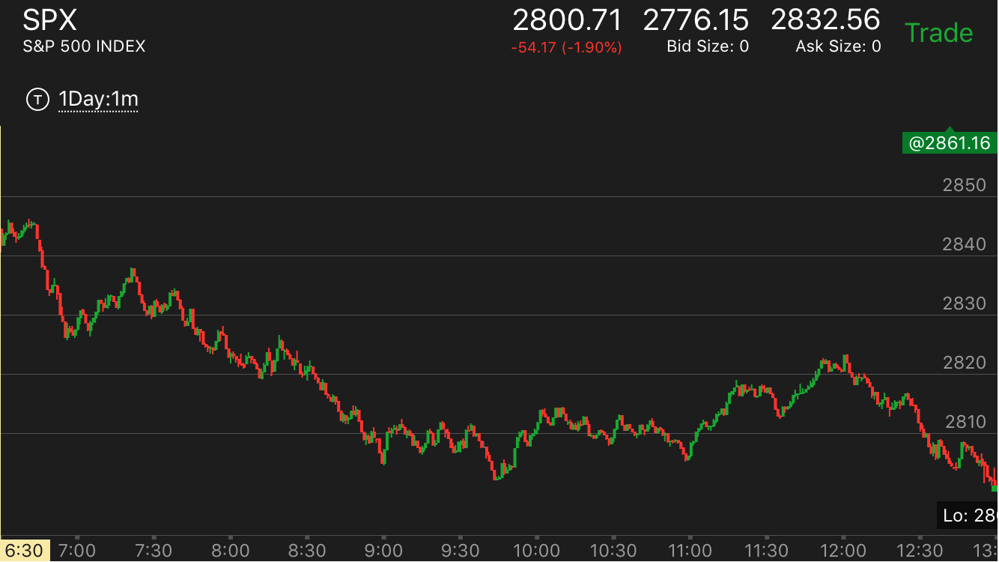
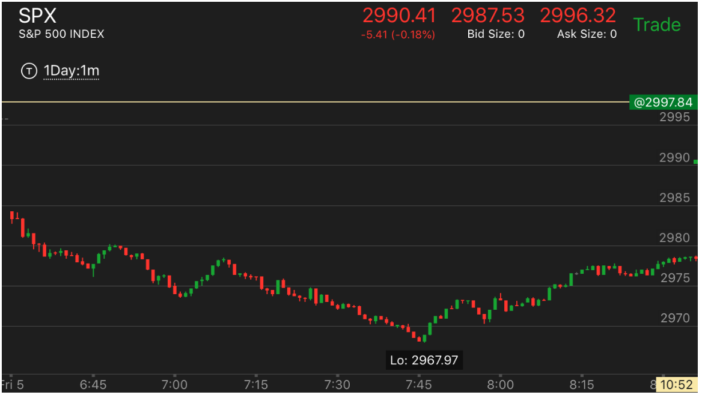
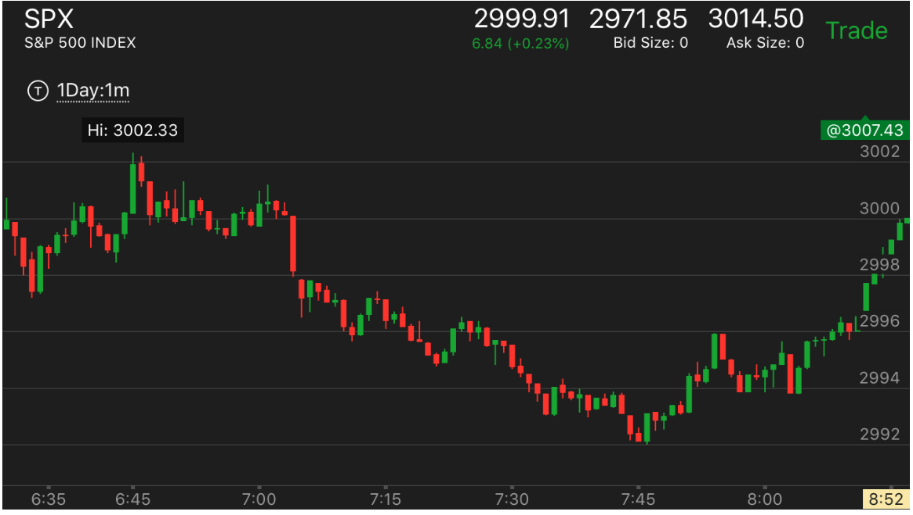
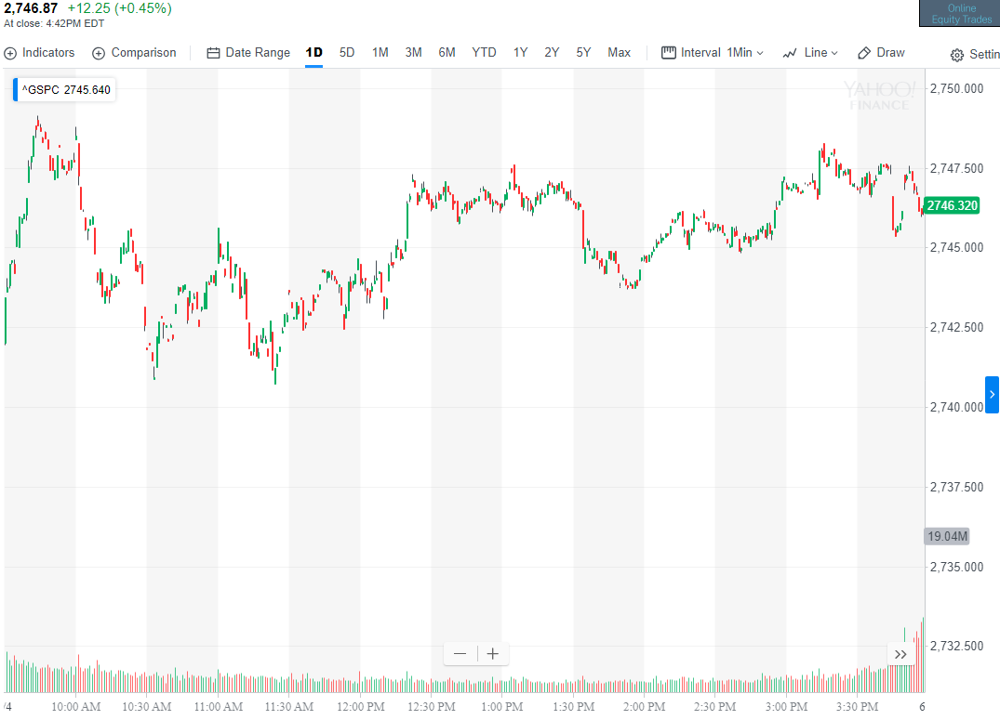
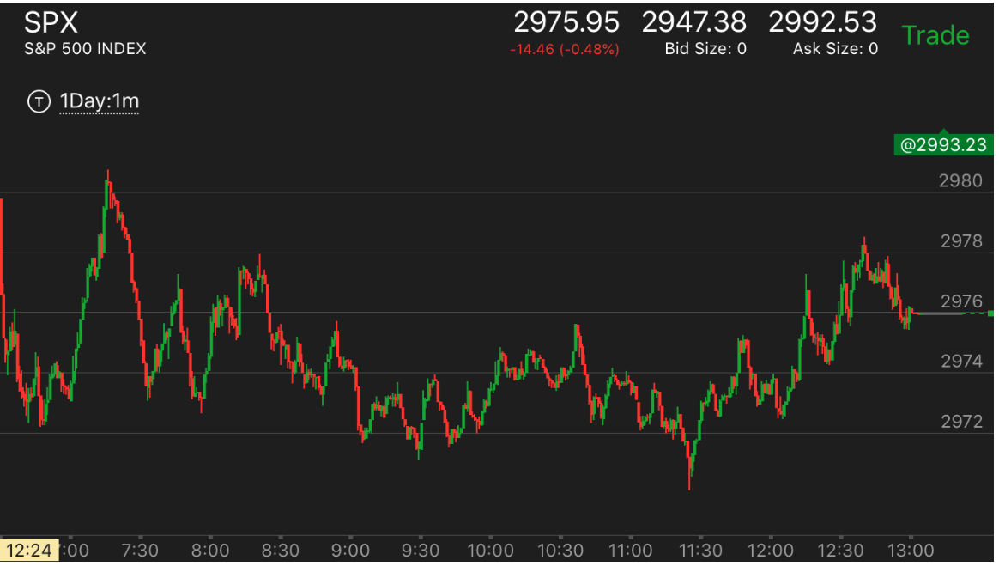
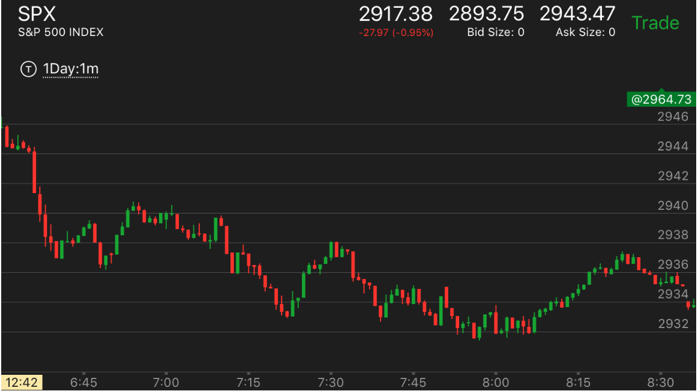

如何识别第一浪
- 前一段走势结束后，一下就从低点或者高点，大幅快速运动。那么这个就是第一浪。这个其实就是强第一浪走势
- 上一个走势结束后，大盘开始从极点缓慢的运动，运动时间很长。那么这个不是第一浪，有时候这个运动因为时间很长，
会幅度很大，但是也不是第一浪。而是准备工作。一旦大幅快速运动，才是第一浪。
- 在反向走势的范围内，有时候，它的运动不算，直到脱离反向走势范围，才是第一浪。
但是也有很多例外的情况。这个要仔细分析。和它走平的时间有关。
- 如何确定什么是第一浪？第一浪一定是冲高或者冲低后，在极点停留几分钟。或者只有哪怕一分钟。或者回调的幅度很小。
这样就坐实了一个走势。如果一下就回拉很大的幅度。那么这个就不是第一浪。
- 如果第一浪是前面的两段走势结束造成的，一定要观察，这个两段走势第二段是否很大，超过第一段。如果超过，
那么开始的反向走势是第一浪。这样即使很大，也没有关系；如果不大，反向的第一浪，就不是第一浪，而是反向加速走势，
一旦越过走平点，就会继续恢复原来的运动方向。
- 这个其实就是反常两段走势。但是它会导致一个主要走势，所以单独拿出来研究。
- 它的第一浪一开始就很快，幅度也很大。可以想见，要想让它反转，它的第二浪要更大，更快才可以。如果这样的走势一直不出现。那么走势会一直持续。
即使最后反转，也是反转一部分而已。
- 但是也要注意它是否又走平的样子。因为另外一种走势是，走平后，加速。这样不需要很大的幅度也可以反转。
- 第一浪不一定是一个走势的开始，它也可能出现在一个走势的中间。如果前面的走势结束了。那么这个走势就是第一浪。
从前面的反向走势刚结束，一开始就快速运动，这个就是第一浪
从前面的反向走势结束后，非常缓慢的运动，这个运动可能持续时间很长，而且运动幅度很大，但是不算第一浪
主要走势中，出现了反向的两段走势，那么随后的快速运动就是第一浪
开盘后，快速大幅的上涨或者下跌，很可能是最后一浪，然后开始反向的缓慢走势
开盘后，快速大幅的上涨或者下跌，很可能是最后一浪，然后开始反向的缓慢走势
TOP

图示：9：40从高点快速下跌，幅度很大。这个很难判断。但是很可能是最后一浪。
然后开始反向走势。这种反向走势，经常稍微超过前面的高点/低点后，就转向了。
主要走势中，出现了反向的两段走势，那么随后的快速运动就是第一浪
TOP

图示：开盘后，震荡，10：00冲高，然后在高点徘徊很久，缓慢下跌。
这个时间很长，但是非常的慢。所以都不属于第一浪。11：20出现了上涨的两段走势。11：40开始大幅下跌。
这个就是第一浪了。这个浪长达20个点。速度也很快。所以看看它后面。并不容易反转。直到快收盘的时候，
才有和它类似的幅度的大跌。造成反转。

图示：2：00开始下跌。2：30出现了一个很小的两段下跌走势。第二段比较激烈。
这个走势反转。它一路上涨。到了2；30结束。3：10开始下跌。3：10这个下跌是第一浪。不要把它看成第二浪，和原来的
混淆起来。这个第一浪很强大。它后面的走势就不会结束，一直跌倒收盘。

图示：8:00出现了两段下跌。第二段很大。随之而来的上涨，一开始很小，就开始走平。
再次大幅上涨，这个就是第一浪。后面走平很久，说明前面是个一浪。这个浪的幅度结合起来是4个点，所以不容易回调。
后面又不断的出现了两段下跌，再次上涨的走势。几乎没有第二浪的上涨。这样持续的上涨到收盘了。
从前面的反向走势刚结束，一开始就快速运动，这个就是第一浪
TOP

图示：从最高点，一开始就快速下跌，创新低后，反弹。说明这个是第一浪。

图示：2：00上涨结束后，出现了第一浪。这个第一浪非常的强。所以不会轻易结束。
应该做空，而不是抄底。

图示：开盘后，冲高后，大幅下跌，形成了很强的第一浪下跌。

图示：开盘出现了弱第一浪走势，它在第四分钟出现了见底的下跌走势，然后缓慢上涨。在第9分钟冲高
后，回调幅度不大。再次缓慢冲高。这个就是第一浪了。后面只要不出现比它更强的浪，就不会反转。

图示：开盘后，从最高点开始迅速大幅下跌。这个不代表会反弹。它在填补真空后，开始大跌。形成下跌的主要走势。

图示：7：45开始了上涨第一浪，它一开始就运动很快。造成很强的升势。
从前面的反向走势结束后，非常缓慢的运动，这个运动可能持续时间很长，
而且运动幅度很大，但是不算第一浪
TOP

图示：这个是非常典型的走势。
开盘后，6：45出现了两段上涨走势。它从高点立刻下跌。幅度比较大。
但是很快就长时间走平。走平时间远远超过了前面两段走势上涨的时间。这样说明这个不是第一浪。因为经过这样的走平，
它已经变得很缓慢了，不能算第一浪了。7：02开始快速大跌，跨越前面的低点。这个才是第一浪。
这个浪的幅度是3个点。直到7：20才出现了3个点的下跌。但是它的反弹比较大，它再次下跌，虽然幅度不大，但是走平下跌。
加上前面的走势，已经具备转折的样子。它后面反弹的时候，也没有创新高，因为它只能反到7：00开始的跌势，但是
无法反转6：45开始的缓慢走势。

图示：11：30开始的上涨，非常的缓慢，所以虽然它上涨幅度很大。
但是不能算第一浪。到了12：00，它开始快速上涨。这个才是第一浪，然后回调后，产生第二浪。第二浪
发生在12:20,它幅度超过第一浪，但是没有立刻反转，而是在高处震荡很久，再次冲高后，才下跌。可以看到它下跌的时候，
没有全面反转而创新低，而是反转到了低于720就结束了。

图示：开盘后，不断冲高，然后先缓慢下跌。到10：00开始快速下跌。这个就是第一浪。
这个第一浪从2749一直跌倒2743.然后反弹，再次下跌。第二浪不如第一大。所以最后没有反转。

图示：11:30出现了一个快速下跌。虽然它没有跌很多。但是这个本身就是一个加速了。
11：30开始上涨，非常的缓慢，这样就不是第一浪，直到12：00开始了第一浪，然后再次上涨。后面的反转也可以看到，
它没有明显低于2886，就继续上涨了。

图示：11：28的第一浪上涨，很快超过了走平点。但是它前面的两段下跌，第二段很大。
说明这个是真的下跌。不是反常两段。所以两段已经结束了。它的反向走势，不受前面的影响。
它的第一浪越过了前面的走平点，不是一个转折的表示，而是很强的第一浪。

图示：开盘后大跌，出现了跌势后，这个是第一浪，而不是结束。这个第一浪很强。
后面很难出现和它反转的浪。所以不要看到开盘快速下跌就以为是到底了。不一定，可能很强的第一浪。也可能是到底的浪。
要仔细分辨。